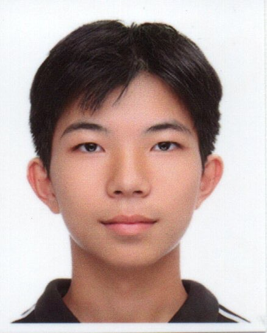
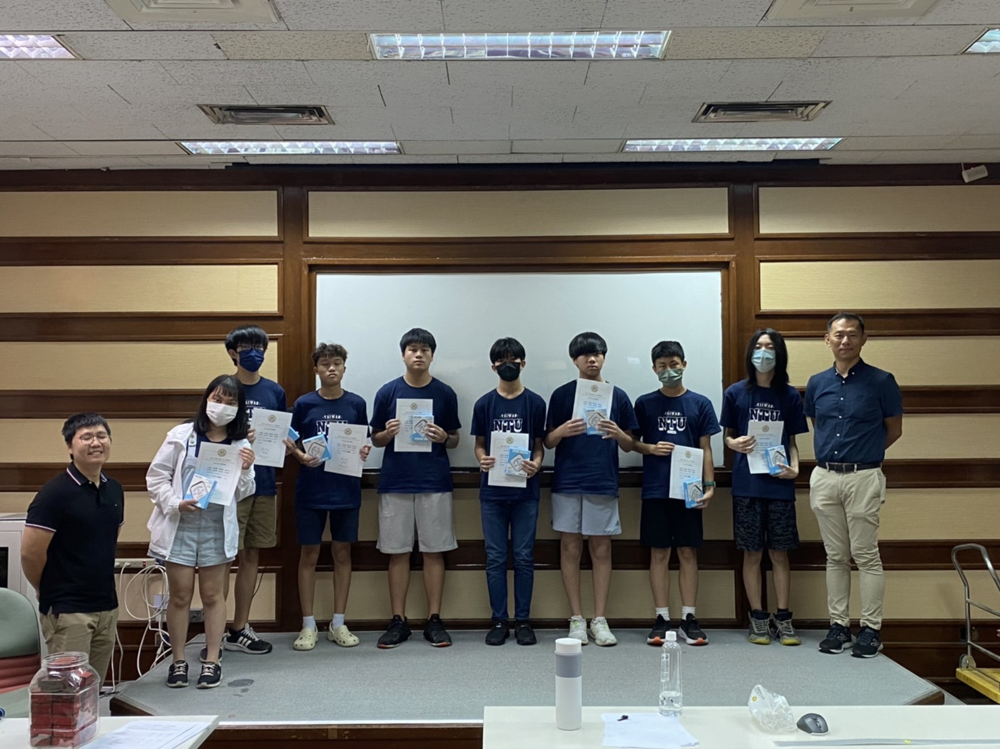
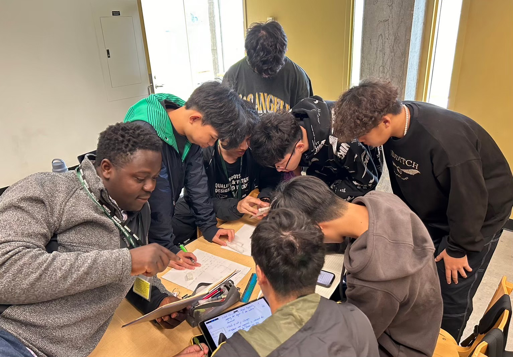
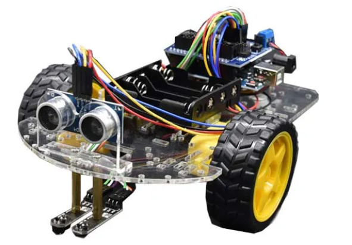
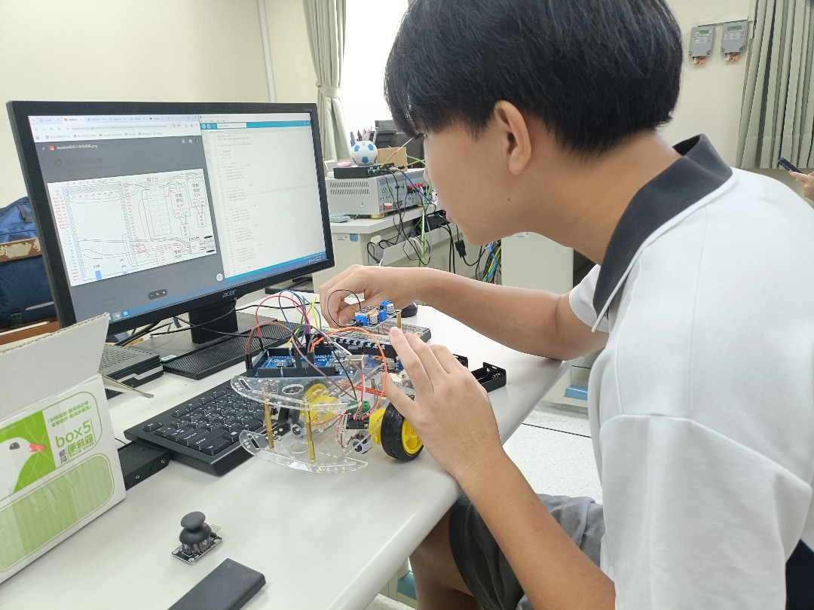
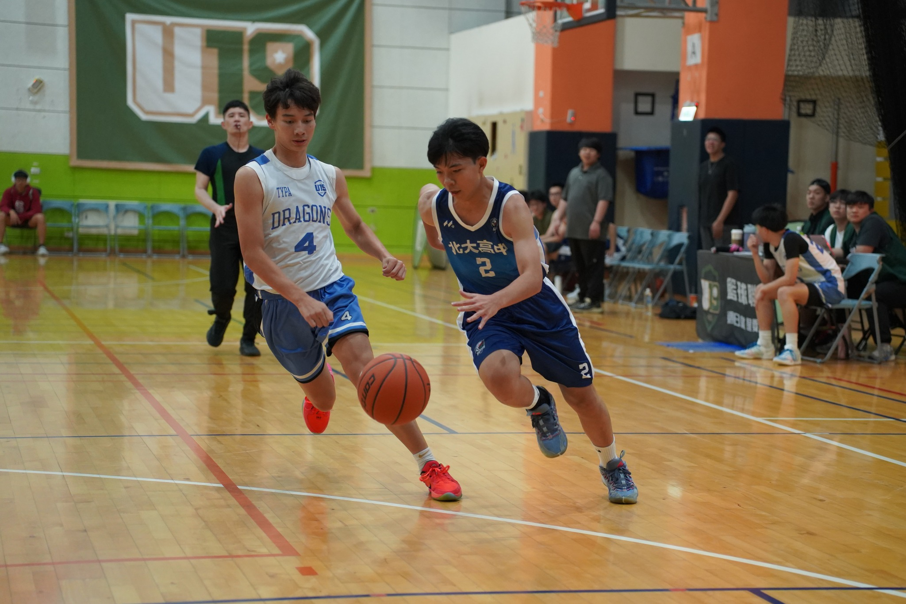

我的個人介紹
基本資料
姓名：李宜澤

學校：北大高中
學校位置
學校位置
興趣：籃球、運動、玩遊戲
高一: 籃球社成員
高三: 籃球社活動長
高三: 籃球隊隊員
台大工程營摘要
升高一的暑假我參加了由國立臺灣大學所主辦的工程營隊，營隊期間為七天。其中有三天的土木工程體驗，兩天的機械工程課程以及兩天的醫學工程課程。在營隊期間，課程分別有土木系的結構介紹、橋梁介紹也有木橋競賽，而機械系則介紹了電動車和組裝了Arduino自走車並進行比賽，醫工系則介紹了眼球的疾病、醫學影像的課程以及使用VR進行人體解剖。在教授與助教的協助下這段期間我了解了工程學群學習的相關內容，也學習了這三個科系的一些基礎課程。而在小組活動中我也學到了團隊合作以及如何提出自己的看法，在營隊過程中的土木橋梁競賽中我們組別也獲得了冠軍。

雙聯課程摘要
高中期間我參加了由北大高中與Blyth Academy一起合作的雙聯學制，課程內容涵蓋了ESLDO、ESLEO、Enjoy ABC口說課、英文文學、數學向量與微積分和函數課程，讓我能夠在語言與學科知識上同步提升。其中，在函數課程中，我更有機會前往加拿大的 Trent University 參加營隊並修習相關課程，實際體驗國外大學的學習環境與教學方式。在這段雙聯學制的過程中，我不僅接觸到全英語授課的環境，也逐漸適應以英文進行思考與表達的方式。這過程中我體驗到不同文化的之間的差異，也提升了我的英文能力，讓我的英文口說更加順暢，更加強了我的國際觀與多元視角。

Goose Camp摘要
高一升高二的暑假我獲得了前往加拿大參加由Blyth Academy與Trent University一起舉辦的短暫遊學營隊的機會，營隊總共有三個禮拜。平日的早上到下午我們需要修Blyth Academy的MDM4U數學函數課程學分。到了晚上則是參與由Goose Camp主辦的活動，例如: 水槍大戰、森林探索與獨木舟活動。而假日則會前往多倫多著名觀光景點，例如: 尼加拉瀑布、Wonderland。參與營隊的過程中，我不僅接觸了當地的學生，還認識了來自世界各地的同學，在認識過程中我們彼此交流各自的文化。這段遊學經驗讓我體驗到了加拿大大學的讀書氛圍，也踏出了我的舒適圈，更提升了我的英文能力

自主學習Arduino紅外線自走車
升高一的暑假我有參加台大主辦的工程營，在營隊中我們有製作Arduino紅外線自走車，但是在營隊期間我們小組沒有成功完成自走車，因此在本次的自主學習當中，我希望我可以把這台自走車完成的更加完美。除此之外，高三下學期，我們學校會給二類組班級上機器人專題，因此我認為在高二先熟悉Arduino的基本程式碼與電路板有助於我高三下學期學習機器人專題。

機器人專題-Arduino搖桿控制車摘要
這學期我們班製作了Arduino遙控車，經過了上學期的幾個Arduino小作品後，我們逐漸了解基礎的語法與電路板的使用。在這堂課，我們結合了上學期學習到的知識製作出一台遙桿控制車，在老師的講解與分析並給我們推薦幾個參考程式後，我們完成了遙控車。在製造遙控車的過程中，我學習到了許多，包括主動學習能力，我們需要參考許多的程式範本中合成並思考出最符合我們遙控車的最終程式。

電動車生命週期對環境影響與綠能改善研究摘要
隨著科技的進步與國際間愈發注重綠能環保，電動車逐漸成為主流。然而，電動車的汙染並非只發生在使用期間。因此在這次的專題研究中，我運用生命週期推算電動車對環境的汙染，並且提出未來可以改善的地方。在此次的專題研究中，我學會了自主學習的精神 ，並且在一次次的尋找資料失敗中學習到了永不放棄與堅持。
社團經驗摘要
從小我對籃球就十分熱愛，高中三年我參與了籃球社與籃球隊。在社團期間，我不僅鍛鍊了自己的身體、認識許多相同愛好的朋友，還參加了比賽。藉由一次次的訓練與比賽，我逐漸地鍛鍊自己的團隊合作、自信心、抗壓性、解決問題與自我要求。

HTML5課程中的JAVAScript小遊戲